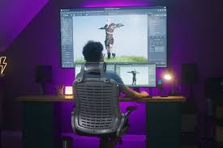

Le développeur de jeux vidéo conçoit des jeux vidéo en programmant les interfaces du jeu, mais aussi les actions, les outils et les menus. Il traduit en code les spécifications du jeu contenues dans le cahier des charges. Il intervient tout au long de la conception du jeu, en le testant et en corrigeant les erreurs. Le développeur de jeux vidéo utilise les langages de programmation C, C++, etc.
|  |